Impress¶
Impress es el programa de presentación (presentación de diapositivas) incluido en LibreOffice. Impress crea presentaciones en formato ODP, que se pueden abrir con otro software de presentación o se pueden exportar en diferentes formatos de presentación. Puede crear diapositivas que contengan muchos elementos diferentes, incluidos texto, listas numeradas y con viñetas, tablas, gráficos y una amplia gama de objetos gráficos, como imágenes prediseñadas, dibujos y fotografías. Impress también incluye un corrector ortográfico, un diccionario de sinónimos, estilos de texto y estilos de fondo.
Primeros pasos con Impress¶
Primero abrimos LibreOffice Impress pulsando en el icono de la aplicación.
También podemos escribir la palabra "Impress" en el botón de inicio de LLiurex y pulsar en LibreOffice Impress.
Se abrirá la ventana de LibreOffice Impress con el siguiente aspecto.
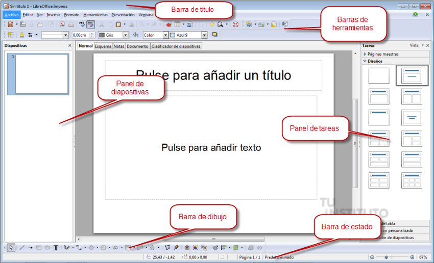
A continuación explicaremos los elementos de los que está compuesta la ventana principal.
-
Título
La barra de título se encuentra en la parte superior de la ventana Impress.
Muestra el nombre de archivo del documento en uso. Cuando al documento no se le ha asignado un nombre (está en la memoria, pero no se ha guardado en el disco), aparecerá como Sin título N, donde N es un número. Los documentos sin título se numeran en el orden en que se crean.
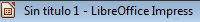
Titulo -
Menús
En cada una de las opciones del menú se despliegan otros submenús que nos mostrarán todas las herramientas y utilidades de las que podemos hacer uso.
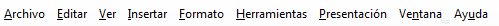
Menús -
Barra de herramientas
Están formadas por botones que nos permiten un acceso rápido a las mismas herramientas que se encuentran en el menú. Las barras de herramientas se pueden personalizar, de forma que sólo estén a la vista los botones que se usen frecuentemente.
Las barras de herramientas pueden mostrarse u ocultarse según se necesite. Para mostrar u ocultar una barra de herramientas tendremos que ir al menú Ver → Barras de herramientas y elegir las barras que deseemos ver del menú emergente.
Entre las principales barras de herramientas encontramos dos que se encuentran seleccionadas por defecto:
- Estándar: La barra de herramientas Estándar, es la misma para todos los módulos de LibreOffice y no se describe en detalle en esta guía del usuario. De forma predeterminada, se encuentra justo debajo de la barra de menú, en la parte superior del espacio de trabajo.
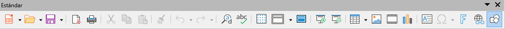
Barra de herramientas Estándar - Formato: se incluyen los botones que permiten realizar las operaciones más frecuentes relativas al formato del texto y de los objetos que se incluyen en las diapositivas.
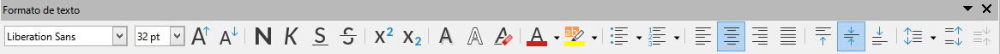
Barra de herramientas Formato - Dibujo: La barra de herramientas Dibujo, contiene todas las funciones necesarias para dibujar varias formas geométricas y a mano alzada y para organizarlas en una diapositiva. Puede encontrar más información sobre la barra de herramientas de dibujo en el «Capítulo 5, Gestión de objetos gráficos».. Para mostrarla, iremos al menú Ver → Barras de herramientas → Dibujo.
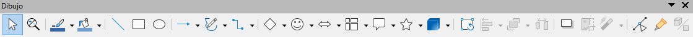
Barra de herramientas de dibujo - Línea y relleno: La barra de herramientas Línea y relleno, le permite modificar las propiedades principales de un objeto. Los iconos y las listas desplegables varían según el tipo de objeto seleccionado. La barra de herramientas Línea y relleno le permite cambiar el color, el estilo y el ancho de una línea dibujada, el color y estilo de relleno y otras propiedades de un objeto. El objeto debe seleccionarse con un clic del ratón. Si el objeto seleccionado es un marco de texto, la barra de herramientas Línea y relleno cambia a la barra de herramientas Formato de texto.
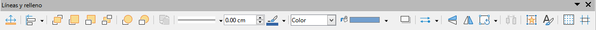
Barra de herramientas de línea y relleno -
Barra de estado
En la barra de estado se muestra información complementaria, como el número de página en la que nos encontramos y cuántas páginas tiene nuestra presentación, además del porcentaje de zoom de la pantalla.
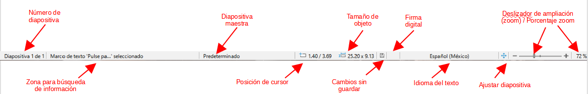
- Panel de diapositivas
Contiene imágenes en miniatura de las diapositivas de la presentación, en el orden en el que se mostrarán (salvo que cambie el orden). En este panel se pueden realizar operaciones con una o más diapositivas:
- Agregar nuevas diapositivas en cualquier punto de la presentación posterior a la primera diapositiva.
- Marcar una diapositiva como oculta, de modo que no se muestre durante la presentación.
- Borrar una diapositiva que ya no se necesite.
- Cambiar el nombre de una diapositiva.
- Copiar o mover el contenido de una diapositiva a otra (copiar y pegar, o cortar y pegar, respectivamente).
- Cambiar la transición de la diapositiva siguiente a la diapositiva seleccionada, o tras cada diapositiva de un grupo de diapositivas.
- Cambiar la secuencia de las diapositivas en la presentación.
- Cambiar el diseño de diapositiva.
- Cambiar simultáneamente el diseño de un grupo de diapositivas.
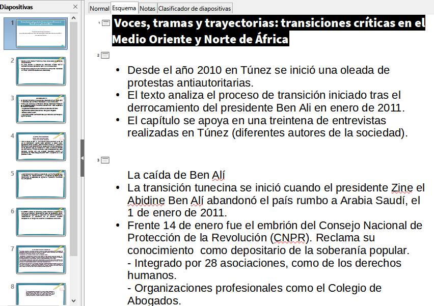
- Modo Notas
Utilice la vista Notas en el espacio de trabajo (figura 14) para agregar notas a una diapositiva. Estas notas no se ven cuando la presentación se muestra a una audiencia usando una pantalla externa conectada a su computadora.
- Haga clic en la pestaña Notas en el Espacio de trabajo.
- Haga clic en la diapositiva en el panel Diapositivas, para que aparezca en el Espacio de trabajo.
- En el cuadro de texto debajo de la diapositiva, haga clic en las palabras Haga clic para agregar notas y comience a escribir sus notas.
- Puede cambiar el tamaño del cuadro de texto Haga clic para agregar notas, utilizando los controladores de cambio de tamaño que aparecen cuando hace clic en el borde del cuadro. También puede mover o cambiar el tamaño del cuadro, haciendo clic y arrastrando el borde del cuadro.
- Cuando se inserta texto en el cuadro de texto Haga clic para agregar notas, se formatea automáticamente utilizando el estilo de notas predefinido, que puede encontrar en Estilos de presentación en la página Estilos, en la Barra lateral. Puede formatear el estilo de Notas para que se adapte a sus necesidades. Para obtener más información, consulte el «Capítulo 8, Adición y formato de diapositivas y notas».
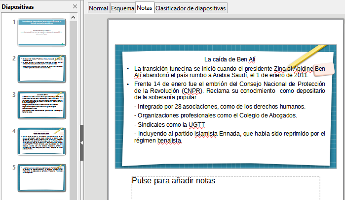
-
Propiedades. Diseños
Se muestran 12 diseños predefinidos para las diapositivas. Se puede elegir uno y usarlo tal como está, o modificarlo según las necesidades. En la actualidad no es posible crear diseños personalizados.
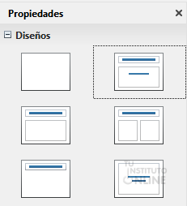
Escala
Actividad
📝 AA2.26 Impress¶
(C.ESP2 / CE2.3 / IC1-3p)
- ¿Qué se puede hacer con una aplicación de presentación moderna?.
- Abre el Impress. Haz una captura de pantalla y señala sus partes principales.
- Escribe las opciones principales de la barra de herramientas.
- Entra en la barra de menú y recorre todas las opciones que tiene.